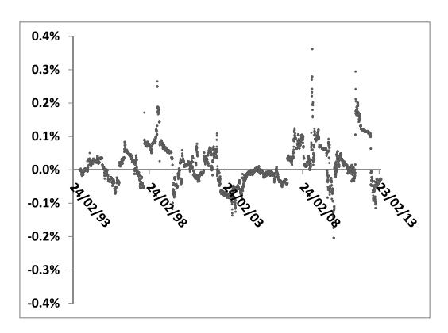
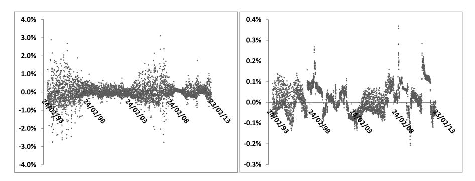

第五章：方差互换
——从对数合约到前向方差曲线的实践基础
本笔记基于 Bergomi《Stochastic Volatility Modeling》第五章，按原书行文结构整理，兼顾数学推导的经济直觉与实务启发。
目录
- 方差互换的前向方差（§5.1）
- 方差互换与对数合约的关系（§5.2）
- 大幅收益的影响（§5.3）
- 行权价离散化的影响（§5.4）
- 分红的影响（§5.6）
- 利率波动率的影响（§5.8）
- 加权方差互换（§5.9）
- 用 PDE 定价方差互换（§5.7）
- 附录 A：Timer 期权（§5.A）
- 附录 B：对数正态密度的扰动（§5.B）
- 端到端工作流算例
导言
第四章从理论上证明，对数合约的前向方差 具有零漂移的优美性质，是构建随机波动率模型的理想状态变量。但对数合约本身在场内并不交易——交易的是方差互换（variance swap，VS）。本章回答一个核心问题：方差互换与对数合约的隐含波动率是否相同？ 若相同，则第四章的建模框架可以直接落地；若不同，则差异来自哪里，如何处理？
本章系统地分析了这一等价性及其边界条件：在纯扩散模型中等价成立；在跳跃扩散模型中两者存在偏差，但偏差来自日收益率的三阶矩，量级极小（约0.2%波动率），实践中可忽略或用保守调整处理。此外，本章还讨论了分红、利率波动率和加权方差互换对定价的影响。
读完本章可以掌握：
- 方差互换的复制原理：对数合约+零波动率 delta 对冲
- 在扩散模型中的精确证明（式5.23）
- 跳跃扩散模型中的偏差量级及其与市场偏斜的关系（式5.28–5.32）
- 现金分红对 VS 复制的影响及修正方案（式5.47）
- 加权方差互换的复制框架（§5.9）
1. 方差互换的前向方差（§5.1）
研究动机
第四章指出前向方差的漂移为零（式4.36），但这一结论是在对数合约框架下推导的。方差互换作为实际可交易的工具，其隐含波动率与对数合约隐含波动率是否相同？本节先从市场结构角度说明 VS 前向方差天然是鞅，为后续的等价性论证铺垫。
1.1 VS 的支付结构与前向方差
方差互换到期支付实现方差减去约定方差：
其中 是使 VS 初始价值为零的VS 波动率（公平执行价）。
离散前向方差的无漂移性：同时持有 份 期 VS 和空 份 期 VS，组合支付只包含 区间的实现方差减去离散前向方差。构造轧平交易后，P&L 仅等于：
其中 。这一 P&L 不需要任何初始资金——VS 前向方差是鞅，漂移为零（式5.6）。这与第四章推导的对数合约前向方差零漂移性质完全平行，只是通过纯套利论证直接得出，无需任何模型假设。
2. 方差互换与对数合约的关系（§5.2）
研究动机
知道了 VS 前向方差天然无漂移，下一步需要确认：VS 的隐含波动率 是否等于对数合约的隐含波动率 （从而与第四章的建模框架对接）？本节通过"零波动率 delta 对冲"论证，在无跳跃扩散假设下给出精确等式。
2.1 对数合约作为 VS 的复制工具（§5.2）
VS 支付 在 的二阶展开下等价于一组 ——这正是以零波动率对 delta 对冲期权时产生的 Gamma P&L（式5.8-5.9）。
寻找满足条件 的欧式支付，解为对数合约（式5.10，）。以零波动率 delta 对冲对数合约恰好复制 VS 支付（精确到 阶）。
VS 波动率的定价：如果对数合约的市场价格就是其零波动率价格 ，则 VS 的公平执行价为零。实际上对数合约有市场价格 ，差值即为 VS 费用：
由于 是以对数合约隐含波动率 定价的（由式5.10反解），代入得：
VS 前向方差等于对数合约前向方差（式5.14）：。
VS 的完整复制公式（用香草期权，式5.15-5.16）：
其中 是零波动率下期权的内在价值（折现远期内在价值）。实务中更高效的方式是用第四章的 Gauss-Hermite 公式（式5.17/4.21）直接从隐含波动率曲面计算。
3. 大幅收益的影响（§5.3）
研究动机
§5.2 的等价关系在 阶成立，更高阶项被忽略。实际上日收益率可以很大（崩盘、闪崩），这时两者的差异来自三阶及以上的项。扩散模型与跳跃扩散模型对这一差异的预测截然不同，由此引出一个重要的实务问题：是否应该用跳跃模型定价 VS？
3.1 扩散模型中的精确等价（§5.3.1）
在任意扩散模型 下，利用第二章的两模型价差公式（式2.30），以零波动率作为基准模型，得到：
同时，在扩散模型中 ，所以 VS 支付的期望值为 。联合式（5.12）得到：
这意味着任何校准到同一市场微笑的扩散模型，对 VS 的定价完全一致——这是扩散框架的一个基本结论。进一步，将对数合约隐含波动率 代入，立得 。这一结论精确到任意阶，无任何近似。
3.2 跳跃扩散模型中的偏差（§5.3.2）
在扩散基础上叠加强度为 、相对幅度为 的 Poisson 跳跃：
对数合约隐含波动率：
VS 隐含波动率（频繁观测极限）：
两者之差：
展开为 的幂次，最低阶非零项为三阶：
经济含义：差值来自日收益率三阶矩——扩散模型中 ，趋零；跳跃模型中跳跃贡献 ，不趋零，两者由此产生差异。
3.3 从市场偏斜推断日收益率偏度（§5.3.3–5.3.5）
跳跃扩散模型中，ATMF 偏斜 与跳跃参数的关系（式5.30）：
代入式（5.29）得到偏差的微笑表达：
在弱偏斜近似下：
数值估算：1年期 VS，，（对应95%/105%偏斜约2 vols），则 ，即偏差约1 vol——看似显著。
但这一结论依赖于一个可疑假设：市场偏斜完全由跳跃（而非随机波动率）产生。跳跃模型隐含的日收益率偏度（式5.39）：
代入 、：。历史实测的日收益率偏度通常量级为 ，变号且极不稳定（受1987年10月等极端事件影响巨大）。
根本问题：跳跃模型的偏斜 ，而实际市场偏斜约 ——两者指数不同，说明市场偏斜的主要来源是随机波动率，而非独立增量的跳跃过程。用跳跃模型校准微笑来推断日收益率偏度，是不稳健的模型依赖关系。
3.4 实际数据与结论（§5.3.7）
对 S&P 500 指数20年日收益率，计算式（5.41）的比值（VS 支付与对数合约 delta 对冲 P&L 的相对偏差），显示：

图5.1：S&P 500 指数20年、以1年滑窗计算的比值（5.41）。数据极为嘈杂，典型量级约为 0.2%，说明实际日收益率偏度很小，扩散近似已足够精确。图中最大值出现在1987年崩盘期间，约为2.5%，但该值极度依赖估计窗口宽度，不具代表性。
实践结论： 在扩散框架下精确成立，在实际中偏差约0.2%，远低于任何可交易对冲的精度。若需考虑极端跳跃情景，应直接用保守压力测试调整（式5.42），而非使用跳跃模型定价。
4. 行权价离散化的影响（§5.4）
对数合约需要无限行权价区间的香草期权复制，实际只能用离散行权价近似。图5.2比较了两种离散化密度（ 和 ）对1年期 VS 复制精度的影响：

图5.2：S&P 500 指数以1年期滑窗计算的 VS 支付与离散化对数合约 P&L 的相对偏差。左图 （粗）：偏差可达 ，但无系统性偏向（正态噪声）；右图 （细）：与图5.1相近，行权价足够密集时离散化误差可忽略。
实务结论：沪深300ETF期权等国内市场的行权价间距约为50–100点，对标的现货在4000–4500点，，对应 ，离散化误差在可接受范围内（右图精度）。但极虚值期权流动性不足，需注意外推方案对 的影响。
对中国市场的参照：国内目前尚无场内方差互换市场（场外偶有交易，但流动性极低），实务中 主要通过期权隐含波动率曲面计算，误差主要来自极虚值期权的外推选择，而非跳跃修正。
5. 分红的影响（§5.6）
5.1 对 VS 支付的影响（§5.6.1）
现金分红 在收盘后导致现货跳价 ，使该日对数收益率包含 的额外成分。
对股票 VS：市场惯例是用调整后收益率 ，因此分红贡献被消除。
对指数 VS：指数分红分散在约50个成分股的分红日，单次分红 （），每次对实现方差的贡献为 ，全年50次合计 （大量级），数值上对 Euro Stoxx 50（，）：——分红对 VS 支付的影响极小，可忽略。
5.2 对 VS 复制的影响（§5.6.2）
现金分红使对数合约的美元 Gamma 不再为常数（式5.45），需补充以分红日为到期日的欧式修正支付（式5.46）：
通过反向逐步递推，所有分红日均需补充形如 的支付。完整复制公式变为（式5.47）：
实务中对指数 VS，可直接用局部波动率模型（校准到含分红的市场微笑）求解后向 PDE（式5.49-5.50）计算，更为便捷。需注意分红收益率需设上限（），否则深度虚值的陡峭偏斜会导致修正项虚高。
6. 利率波动率的影响（§5.8）
期权隐含波动率是远期价格的波动率，而 VS 支付的是现货的实现方差。当利率随机时两者存在差异。在 Ho-Lee 模型（利率正态波动率 为常数）下：
一阶近似：
数值估算：，，， 年：修正约 vol——对长期 VS 不可忽略。
国内5年以上利率波动率较低，且目前 A 股个股期权和 ETF 期权期限以1年内为主，此项修正在实务中影响有限，但在长期利率衍生品定价场景下需关注。
7. 加权方差互换（§5.9）
加权 VS 支付 ，权重 使实现方差只在特定现货区间累积。
复制条件：找到欧式支付 使 。由于 依赖 ，以零波动率和 的条件对冲（式5.59），P&L 恰好等于加权方差贡献（式5.60）。
主要类型：
| 类型 | 权重 | 复制支付 | 特点 |
|---|---|---|---|
| 标准 VS | 1 | ATM附近gamma均匀 | |
| Gamma swap | 现货上涨时gamma更大，偏向多头 | ||
| 条件 VS | 分段对数 | 只统计现货在区间内的方差 |
Gamma swap 的 VS 波动率与标准 VS 类似，均可由式（5.48）的局部波动率积分计算，将权重 代入 PDE（式5.49）即可。
7.2 各类加权 VS 的详细分析
Gamma swap（）
复制支付为 ，中间期限支付为对数合约。若 ，复制组合只需到期日 的 合约，VS 波动率等于 合约的隐含波动率 （式4.22）。
关键性质： 合约用密度 （而非标准 VS 的 ）复制，低行权价期权权重更小，因此在负偏斜市场中 ——卖方交付 Gamma swap 的"成本"低于标准 VS，因为低行权价的昂贵保护被减少了。
从买方角度：若认为现货上涨时波动率更高（如大宗商品），Gamma swap 更合适，因为它在现货高位时积累更多方差。
算术方差互换（）
支付 ，复制支付为抛物线（）。由于展开式在二阶严格截断（抛物线的高阶导数为零），算术 VS 的复制在任意阶都精确，没有来自大收益率的误差——这在所有加权 VS 中是唯一的。缺点是价格对现货水平非常敏感，实务中较少使用。
条件方差互换（corridor VS，）
只在现货处于 区间时积累方差，常见形式为 down-VS（）和 up-VS（）。
终端复制支付为截断对数合约：
中间期限支付为期权与零息债的组合（行权价为 和 ）。
穿越障碍的处理：当收益率从障碍一侧越到另一侧时（如 ，），delta 对冲的实际 P&L 为：
与 term sheet 所规定的条件 VS 支付并不完全匹配——差值部分需要单独估算并计入定价。这是条件 VS 定价中不可忽略的实务复杂性。
8. 用 PDE 定价方差互换（§5.7）
研究动机
§5.6.2 的静态复制方案（对数合约加中间期限欧式支付）在原理上是精确的，但对指数 VS 而言分红日极多（Euro Stoxx 50 约50个/年），逐一计算中间期限支付代价高昂。利用§5.3.1的结论——任何校准到同一市场微笑的扩散模型对 VS 定价一致——可以选择局部波动率模型，通过 PDE 高效计算。
局部波动率模型下 VS 波动率（式5.48）：
求解后向 PDE（式5.49）：
终端条件 ，在每个分红日 施加匹配条件 。结果为：
对指数 VS，还需在每个分红日加入 的贡献（匹配条件式5.51），但如§5.6.1所示该贡献极小。需注意有效分红收益率需设上限（），防止陡峭偏斜导致修正项虚高。
大收益率调整：若需在 PDE 框架中纳入式（5.52）的跳跃修正（），只需将 PDE（5.49）右端修改为：
对常数 、，解的修正量为常数 ，与底层局部波动率无关。
9. 附录 A：Timer 期权（§5.A）
研究动机
§5.2 指出，VS 是唯一美元 Gamma 为常数的期权，其最终 P&L 仅取决于实现波动率与隐含波动率之差，与路径无关。对一般期权，Gamma 是 的函数，路径依赖使得即使平均实现波动率匹配隐含波动率，P&L 也可能不为零（第一章式1.9的讨论）。Timer 期权通过将物理时间替换为二次变差（quadratic variation），将一般期权也转化为对实现波动率鲁棒的工具。
A.1 动态调整隐含波动率至零 P&L（§5.A.1）
考虑持有短期权，以时变隐含波动率 进行 delta 对冲，要求每步 P&L 精确为零（式5.62）：
利用 Black-Scholes 中 Vega-Gamma 关系（式5.66）：
推导细节：对 Black-Scholes PDE 关于 求导，得到 Vega 满足的 PDE（式5.63），其源项为 。关键步骤：BS PDE 关于 求 阶导后， 仍满足同一 PDE，因此折现美元 Gamma 是鞅（式5.65-5.66 的推导），从而 Vega 等于 Gamma 乘以 。
代入零 P&L 条件，得到 的动态方程：
积分得：
经济含义： 是"剩余波动率预算"除以"剩余时间"的平方根。若截至时刻 实现的二次变差 （恰好匹配），则 ，carry P&L 为零；若 （超额实现），则 ，负 Gamma P&L 被正 Vega MTM P&L 精确抵消。
两种到期结果：
- （实现波动率不足）：到期时二次变差未耗尽，有剩余"时间价值"，期权以正价值结算，P&L （凸支付性质）
- （实现波动率超额）：存在时刻 使 ，此后以零波动率继续 delta 对冲，P&L
关键性质：P&L 的符号由实现波动率与隐含波动率之差唯一决定（与路径无关），量级是随机的。这比标准期权更强——后者即使平均实现波动率匹配隐含波动率，P&L 也可能因路径不同而为任意符号。
A.2 Timer 期权的定义与定价（§5.A.2）
定义：Timer 期权支付 ，其中 是二次变差 首次达到预设预算 的时刻（代替固定到期日 ）。
无套利定价：P&L（式5.69b）在 阶为零的充要条件是：
第一个条件说明 P 不依赖物理时间（时间由 替代），第二个条件是以 为时间的 Black-Scholes 方程。解为：
其中 ——这正是以剩余二次变差预算 为方差、波动率为1的 Black-Scholes 价格。
模型无关性：任何连续半鞅过程下，只要 delta 对冲精确（连续时间），Timer 期权的到期 P&L 精确为零。定价不依赖任何波动率模型——只要能交易 ，就能完美复制。实践中的模型依赖性来自三阶项（式5.71）：
比标准期权的 P&L（）少一阶——Timer 期权的 gamma/theta 风险显著更小。
利率和分红的修正（式5.72-5.73）：利率不为零时，融资成本按物理时间计算，模型无关性条件变为两个 PDE（式5.72a-b），解为：
即定价等价于以远期价格 在时刻 结算，这一规定下利率随机性也不影响模型无关性。
实务注意：
- 实际 term sheet 通常定义 为 超过 的首个交易日，导致"overshoot"；最大期限 （参考波动率）等条款需额外定价
- 单股 Timer 期权风险更高（大幅隔夜跳价），指数 Timer 期权因分散效应相对稳健
A.3 衍生应用：杠杆 ETF（§5.A.4）
杠杆 ETF（LETF）以固定杠杆 每日重新平衡投资组合。对数收益率展开到 阶：
最后一项 即重新平衡导致的方差损耗：
- （多头杠杆）：，每次波动均损耗 NAV
- （反向 ETF）：，同样有损耗
这揭示了 LETF 的根本特征：路径依赖和波动率拖累。对比 Timer 期权，LETF 持有者暴露于实现方差的累积（通过 ），而 Timer 期权买方则可以精确对冲这一暴露。
附录 B：对数正态密度的扰动（§5.B）
本附录给出 ATMF 偏斜 与收益率偏度 之间的定量关系，为§5.3.5的讨论提供数学支撑。
对 的密度在对数正态基准 附近展开到三阶累积量（偏度），得到 Black-Scholes 公式的一阶修正，进而推导出：
其中 是 的偏度。
含义：若偏度 （跳跃扩散的典型缩放），则 ATMF 偏斜 ；若 （随机波动率的典型行为），则 。实际市场中偏斜的期限结构更接近 ，说明随机波动率而非独立增量跳跃是主导来源（§5.3.5 的核心论证）。
核心等价性：在扩散模型下，（式5.13/5.23），VS 前向方差与对数合约前向方差完全等同，从而与第四章的建模框架无缝对接。这一等价性是模型无关的（任何校准到同一市场微笑的扩散模型给出相同 VS 价格）。
跳跃修正：差异来自日收益率三阶矩，量级约0.2%，在扩散框架下可忽略。若市场 VS 价格明显高于/低于对数合约隐含波动率，应用式（5.42）进行保守压力测试调整，而非使用跳跃模型（后者对偏斜的使用方式不稳健）。
建模框架的最终形式（式5.43）：
即为 VS 前向方差曲线，无漂移，完全由波动率结构 参数化。这是第七章前向方差模型的精确起点。
专题：工作流算例——VS 定价与前向方差曲线构建
基础数据（沿用第四章算例）：，，市场隐含波动率曲面：3M 和 1Y 共11格点，已知对数合约隐含波动率 ，（来自第四章步骤1-2的 Gauss-Hermite 积分结果）。
步骤1：计算 VS 隐含波动率
做什么：在扩散假设下，，直接等价。
积分方差：，
关键观察：ATMF 隐含波动率（3M: 20.0%，1Y: 20.0%）低于 VS 隐含波动率（3M: 20.1%，1Y: 20.3%），差值约0.1–0.3%，来自负偏斜对对数合约隐含波动率的拉升（第三章式3.30）。
步骤2：计算离散前向方差
做什么：由式（5.4），提取 区间的 VS 前向方差。
对应前向波动率 。
关键观察：前向方差（20.37%²/年）略高于3M和1Y的当期对数合约方差，反映期限结构的小幅上倾。若1Y对数合约隐含波动率低于3M（下倾期限结构），前向方差将低于当期值，可能出现前向方差低于当期波动率的情形，需关注是否满足凸序条件。
步骤3：跳跃修正估算（可选）
做什么：若市场 VS 报价与对数合约隐含波动率存在差异，用式（5.42）估算合理调整幅度。
设压力情景：月度跳幅 ，年化概率 （每月一次）：
即 ，对应 ——调整幅度约0.1%，量级极小，与图5.1的历史观测一致。
步骤4：验证凸序条件与无漂移性
做什么：确认 VS 前向方差为正（凸序条件满足），验证无漂移性可供建模使用。
凸序条件 严格满足。VS 前向方差可以作为无漂移随机过程的初始条件，参数化 即可进入第七章的前向方差模型。
工作流总结
| 步骤 | 核心公式 | 关键数值 | 说明 |
|---|---|---|---|
| 1. VS 隐含波动率 | （式5.13） | 3M: 20.1%，1Y: 20.3% | 扩散假设下与对数合约精确等价 |
| 2. 离散前向方差 | 式（5.4） | 前向方差为正，无漂移，可建模 | |
| 3. 跳跃调整 | 式（5.42）（可选） | 压力测试量级极小，通常忽略 | |
| 4. 凸序验证 | ✅ | 确保前向方差为正，满足建模前提 |
这四步确立了将 VS 市场报价作为状态变量进入随机波动率模型的完整路径，也说明了为什么第七章的前向方差模型可以直接以 VS 数据校准：VS 价格是欧式期权的线性泛函（式5.16），模型精确校准到它们等价于精确校准到 的期限结构。
本章总结
核心等价性：在扩散模型下，（式5.13/5.23），VS 前向方差与对数合约前向方差完全等同。这一等价性模型无关——任何校准到同一市场微笑的扩散模型对 VS 定价一致，且精确成立于任意阶，无近似。
跳跃修正的正确处理：跳跃扩散模型给出 （式5.32），但其前提是偏斜完全由跳跃产生（隐含 ），与实证不符（实际约 ）。正确做法是保守压力测试调整（式5.42），而非跳跃模型定价。历史实证（图5.1）显示实际偏差约0.2%，可忽略。
分红的两重影响：支付层面（极小，）可忽略；复制层面（需补充分红日欧式支付）在实务中用局部波动率 PDE（式5.49-5.50）处理。利率波动率对长期 VS 影响达1 vol 点（5年期，式5.55）不可忽视。
加权 VS 的核心逻辑：所有变体均通过"找到满足 的支付 ，以零波动率和 进行 delta 对冲"来复制，算术 VS 是唯一精确可复制（任意阶）的类型。条件 VS 的穿越障碍问题需单独估算。
Timer 期权：将物理时间替换为二次变差，使期权定价在连续时间下精确模型无关。P&L 的阶数比标准期权高一阶（ vs ），风险显著更小，实务中利率和分红修正通过以远期结算来处理。
建模框架的最终形式（式5.43，本书后续章节的基础）：
为 VS 前向方差曲线，零漂移，完全由波动率结构 参数化——第七章的任务是具体设定 。
关键公式索引
| 编号 | 内容 |
|---|---|
| (5.3) | VS 支付与 VS 波动率定义 |
| (5.5) | VS 前向方差 P&L（零漂移套利论证） |
| (5.12)/(5.13) | VS 波动率与对数合约的关系； |
| (5.16) | VS 波动率的香草期权积分公式 |
| (5.17) | Gauss-Hermite 积分（等同于式4.21） |
| (5.21)/(5.23) | 扩散模型中精确等价的推导 |
| (5.25)/(5.27) | 跳跃扩散模型中的对数合约和 VS 波动率 |
| (5.28)/(5.29) | VS 与对数合约差值（三阶矩主导） |
| (5.31)/(5.32) | 差值用 ATMF 偏斜表达 |
| (5.37)/(5.38) | 模型无关的偏度—VS 调整关系 |
| (5.40) | ATMF 偏斜与偏度关系（附录B） |
| (5.41) | 历史 VS/对数合约比值估计量 |
| (5.42) | 压力测试调整公式 |
| (5.43) | 最终建模框架 SDEs |
| (5.46)/(5.47) | 现金分红下的复制修正 |
| (5.49)/(5.50) | PDE 定价 VS |
| (5.54)/(5.55) | 利率波动率修正 |
| (5.57)/(5.58) | 加权 VS 复制条件 |
| (5.62)/(5.66)/(5.67) | Timer 期权动态调整（Vega-Gamma 关系） |
| (5.68)/(5.70) | Timer 期权定价公式与模型无关条件 |
| (5.71)/(5.72)/(5.73) | Timer 期权三阶残余 P&L；含利率修正 |